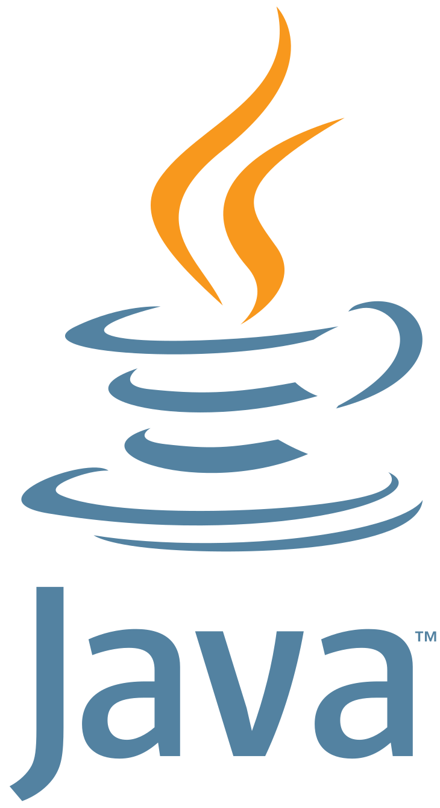

Lenguaje Java.
Descripción.
Java
es un lenguaje de programación de propósito general, orientado a objetos, que fue creado por James Gosling y su equipo en Sun Microsystems a principios de la década de 1990. Desde entonces, ha ganado una enorme popularidad y se ha convertido en uno de los lenguajes de programación más utilizados en el mundo, especialmente en el desarrollo de aplicaciones empresariales y Android.
Java
es un lenguaje de programación sólido y versátil que se ha convertido en una opción popular en el desarrollo de aplicaciones empresariales, aplicaciones móviles para Android y más. Su portabilidad, seguridad y amplia comunidad de desarrolladores son algunas de las razones por las que sigue siendo una opción atractiva para una amplia gama de proyectos de software.
Características.
Orientado a objetos:
Java
es un lenguaje orientado a objetos, lo que significa que se basa en el concepto de clases y objetos. Los objetos representan entidades del mundo real, mientras que las clases son plantillas que definen las características y el comportamiento de esos objetos.
Portabilidad:
Java
se diseñó para ser altamente portátil, lo que significa que los programas escritos en
Java
pueden ejecutarse en diferentes plataformas sin cambios. Esto es posible gracias a la Java Virtual Machine (JVM), que actúa como una capa de abstracción entre el código
Java
y el sistema operativo subyacente.
Lenguaje compilado e interpretado: A diferencia de
Python
,
Java
es un lenguaje compilado. El código fuente se compila en bytecode, un código intermedio que es ejecutado por la JVM. Esto permite una combinación de eficiencia y portabilidad.
Tipado estático:
Java
es un lenguaje de tipado estático, lo que significa que las variables deben declararse con un tipo específico y este tipo no puede cambiarse durante la ejecución del programa.
Biblioteca estándar extensa:
Java
viene con una biblioteca estándar rica en funcionalidades que proporciona numerosas clases y métodos para realizar tareas comunes, como operaciones de entrada/salida, manipulación de cadenas, creación de GUI, acceso a bases de datos y más.
Seguridad:
Java
se ha utilizado ampliamente en entornos empresariales debido a sus características de seguridad. La JVM implementa un modelo de seguridad robusto que protege a los usuarios de posibles amenazas en la ejecución de código no confiable.
Comunidad activa: La comunidad de desarrollo de
Java
es grande y activa. Existen muchas bibliotecas y frameworks de código abierto que facilitan el desarrollo en diferentes áreas y proporcionan soluciones para una amplia variedad de problemas.
Usos.
Desarrollo de aplicaciones empresariales:
Java
es ampliamente utilizado en el desarrollo de aplicaciones empresariales debido a su portabilidad y escalabilidad. Frameworks como Spring facilitan la creación de aplicaciones empresariales robustas y seguras.
Desarrollo de aplicaciones Android: Android, el sistema operativo móvil más popular del mundo, se basa en
Java
. Los desarrolladores utilizan
Java
para crear aplicaciones nativas para dispositivos Android.
Aplicaciones de escritorio:
Java
es adecuado para el desarrollo de aplicaciones de escritorio con interfaces gráficas de usuario (GUI). La biblioteca Swing proporciona componentes gráficos para crear interfaces interactivas.
Desarrollo web:
Java
se puede utilizar en el desarrollo web mediante el uso de frameworks como JavaServer Faces (JSF) o Spring MVC. Sin embargo, en el desarrollo web,
Java
compite con otros lenguajes y frameworks como
Python
con Django o
Ruby
con Ruby on Rails.
Juegos: Aunque
Java
no es tan popular como otros lenguajes para el desarrollo de juegos de alto rendimiento, existen bibliotecas y motores de juegos, como LibGDX, que permiten crear juegos 2D y 3D utilizando
Java
.
